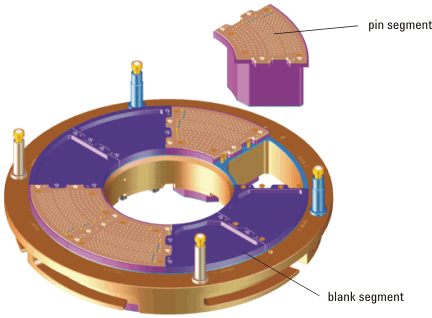
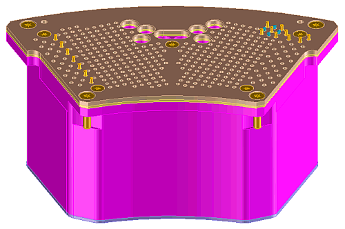

WPI pogo tower elements
The pogo tower is a physical extension of the DUT interface that uses pogo pins to connect the WPI DUT board to the probe card. See WPI overview and docking. The pogo tower has a center hole that can be used for inking sets or for wireless probe card detectors.
The pogo tower frame is connected to the mechanical ground of the test system body. Since the wafer prober normally has a different ground than the test system, the pogo tower frame should be isolated electrically from all conducting parts that are in contact with the wafer prober.
The pogo tower has slots for eight individual pin segments. Each pin segment has its own signal ground which is determined by either the DUT board design or the probe card design.
Three different pin segments are available:
- Pin segments for the 9.5 inch WPI
The current specification for each signal pin is 3 amperes.
- Pin segments for the 12 inch WPI
The current specification for each signal pin is 4 amperes.
(9.5 inch and 12 inch WPI pin segments differ in size, number of pins, and pin layout.)
- Blank segments for the 9.5 inch WPI and blank segments for the 12 inch WPI
Blank segments are spring-loaded segments with no pins. Blank segments for the 9.5 inch and 12inch WPIs differ in size and geometry. Always equip all unused slots of the pogo tower with blank segments to ensure an equal distribution of pressure on the probe card and to provide physical protection to all parts of the probe card.
The figure below shows the 9.5 inch WPI pogo tower with pin segments and blank segments installed.

The figure below shows a pin segment for the 12 inch WPI pogo tower.
